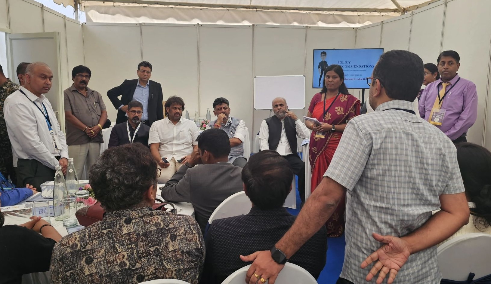
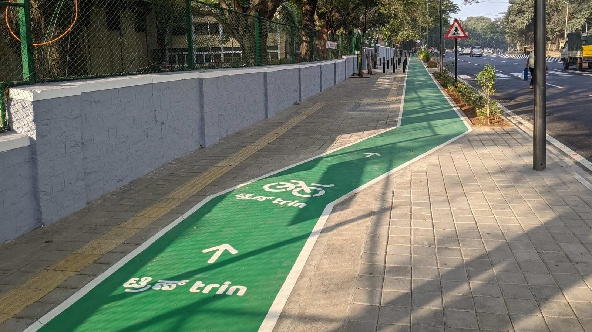
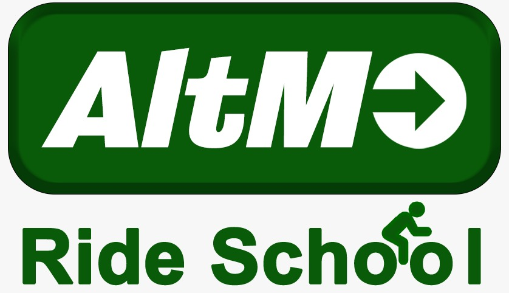
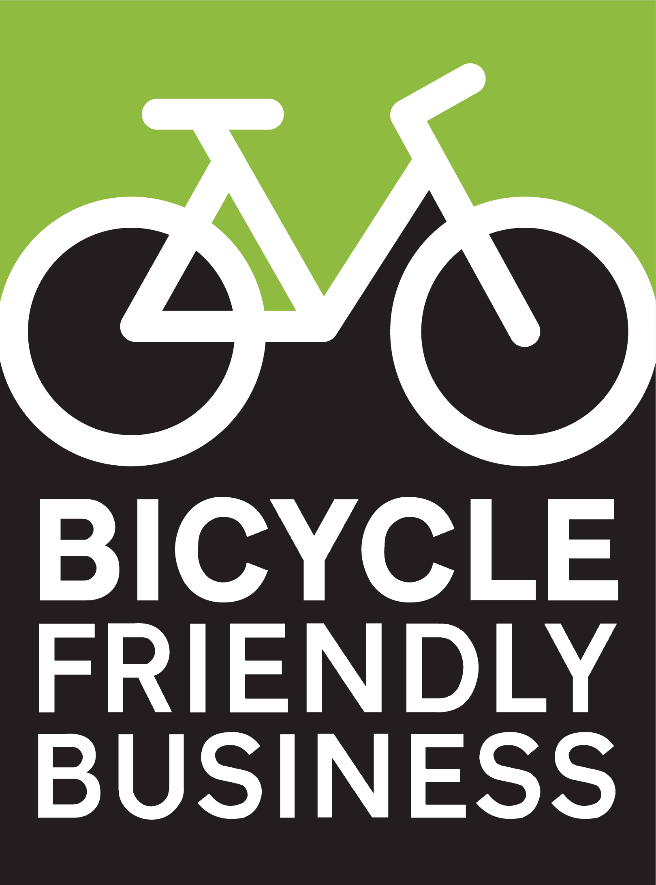
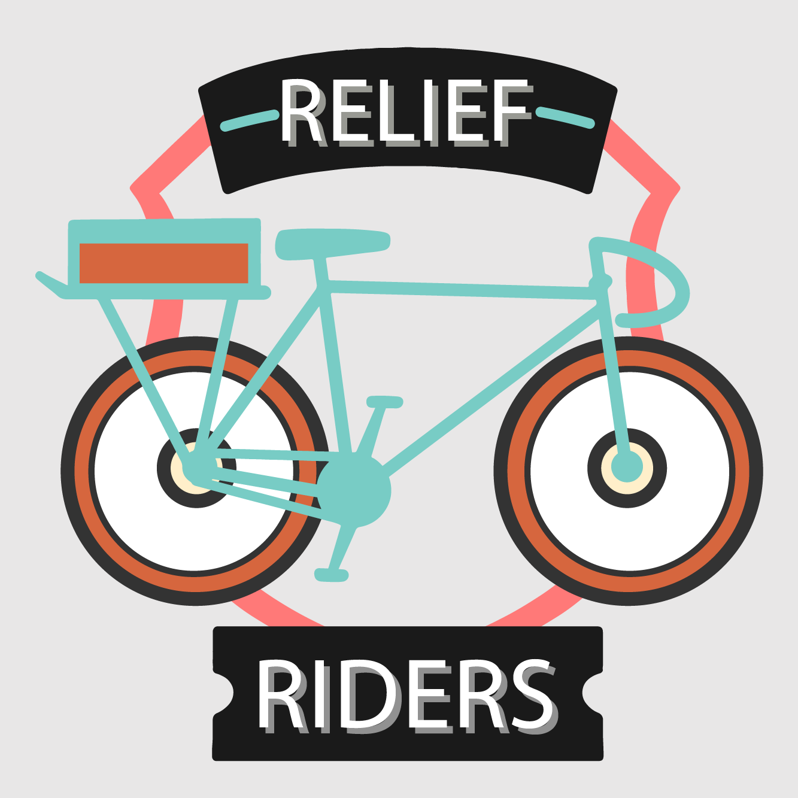
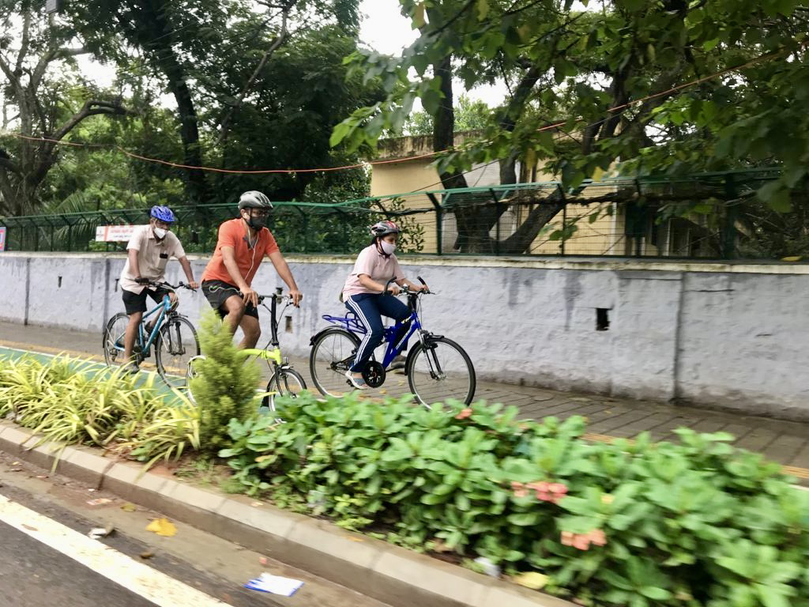
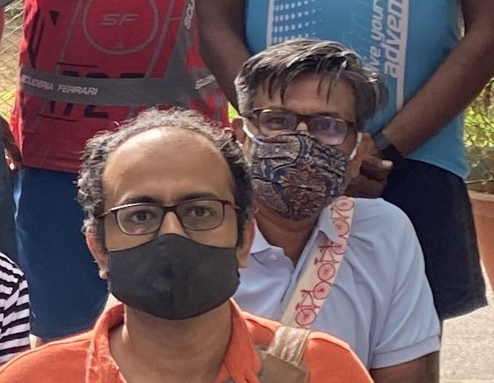
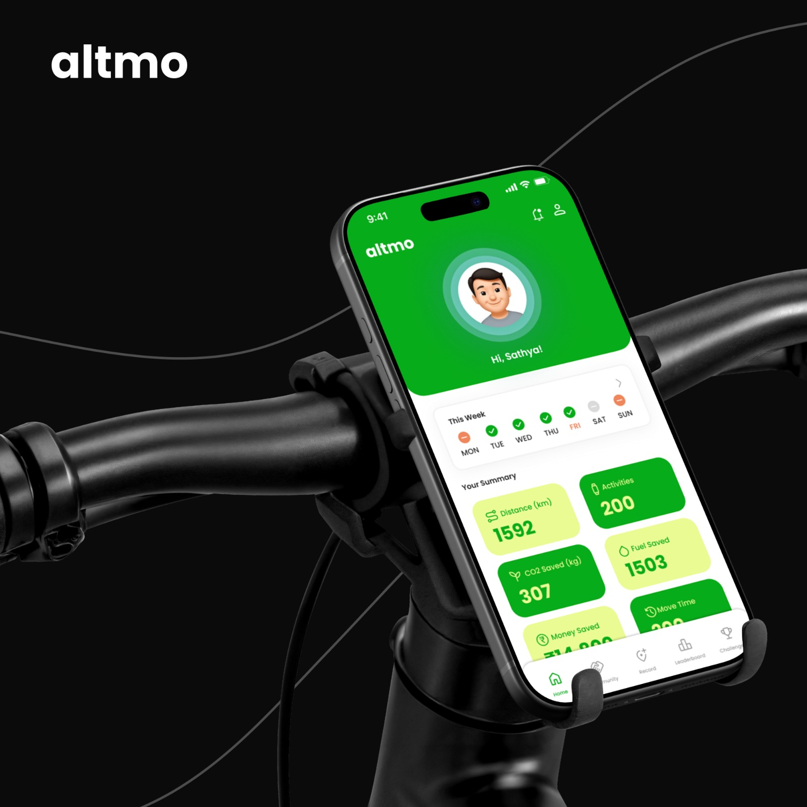

Urban Morph
Urban Morph stewards the Council for Active Mobility — India's hub for walking and cycling advocacy, data, programmes, and campaigns. The organisation builds public-facing tools (Altmo, Hejje Gala, BFB) and convenes the policy ecosystem behind the National Active Mobility Framework.
urbanmorph.inProgrammes & activities
Public-facing programmes that turn the Framework into everyday practice.

Hejje Gala
India's largest corporate active mobility challenge — 882 companies, 9,156+ employees, tracked via Altmo.
Hejje Gala
#MY15MinCity
The 15-minute city — a residential concept where all daily needs are within a short walk or bicycle ride. The campaign urges people to shun the motor vehicle for neighbourhood trips.

AltMo Digest
The first bicycle-story magazine from Bengaluru. Bicycle parking is making an increasing presence in the city.
Flip book
Safe cycling routes
Alternate, calmer cycling routes to common commute destinations. Missing a favourite route? Get in touch.

AltMo Ride School
Train people to ride a bicycle confidently on Indian city roads. List yourself on the platform.
Ride school portal
Bicycle Friendly Business
Local retail businesses that welcome and accommodate cyclists — parking for cyclists who aren't customers, and preferential treatment for cyclist customers.
Participate
Relief Riders
Award-winning pandemic relief effort. Cyclists across 12 Indian cities delivered food and medicines to lockdown-affected citizens.


Active Mobility Councillors
Ward-level councillors across Bengaluru working to transform neighbourhoods into safer, walkable and cyclable communities.
View councillorsCount the trips that don't make headlines.
Log every walk, ride, and bus trip. See CO2 saved. Join challenges. The data becomes the case — and powers Hejje Gala.
Download Altmo
Framework contributors
Organisations and individuals who attended the May 2026 CFAM convening and committed specific deliverables to the Framework. Add your card →
ITDP India
Aswathy Dilip · Venugopal AV · Siva S
Position: Strongly support — and recommends pairing the Bill with a national programme catalysing street transformation across the country plus state-level MV rule amendments.
Priority clause: All new and redeveloped streets must comply with IRC:103-2022. Mandatory 50% of state and city transport & highways budget for pedestrian-first street design.
Tracks: Policy & Research · Technical & Standards
Streams: 1 · 2 · 3
Raahgiri Foundation
Sarika Panda Bhatt, Co-Founder
Position: Strongly support. Brings data-driven strategies, technical support, and community engagement through Raahgiri Days.
Priority clauses: Right to walk and cycle · 1.8 m minimum walking width · high penalties for violations · NMT integrated with bus stops · stronger bus network.
Tracks: Citizen Engagement · Technical & Standards · Communications
Streams: 1 · 2 · 4
Nagariyal Research and Action Foundation
Santhosh Loganaathan, Executive Director
Position: Strongly support. Bringing data, government access in Tamil Nadu, technical inputs, communications via video-essay campaign.
Priority clause: Hierarchy of road users with defensive driving responsibility — those operating most dangerous vehicles bear the most responsibility for the danger they pose. Severe penalties for harming VRUs.
Tracks: Policy & Research · Legal & Litigation · Communications
Streams: 1 · 3 · 4
Parisar Pune
Ranjit Gadgil, Program Director
Position: Strongly support, with possible suggestions on instrument. Will run advocacy with Maharashtra MPs and connect similar groups across states.
Priority clause: Provision of the appropriate infrastructure (with implementation accountability).
Tracks: Citizen Engagement · Policy & Research · Communications
Streams: 1 · 3
Yulu
Gowri Natarajan, Associate Director — Public Policy & Partnerships
Position: Need more information. Brings last-mile mobility data, EV-policy expertise, and content distribution through Yulu's own social channels.
Priority clause: Policy and infrastructure support for shared vehicles (electric or other modes).
Tracks: Communications & Campaigns · Government (industry liaison)
Streams: 2 · 3
Satya Arikutharam
Independent Consultant
Position: Need more information — generally prefers a decentralised approach. Continuing the campaign for the Karnataka Active Mobility Bill.
Priority focus: State-level legislative ask for Karnataka AMB.
Tracks: Policy & Research · Legal & Litigation · Citizen Engagement
Streams: 3
Seven tracks of work
Each track describes a kind of work the ecosystem is doing — and the organisations doing it. Most organisations work across multiple tracks.
Policy & Research
Think tanks, academic groups, and policy researchers producing analysis, comparative studies, white papers, and the evidence base that grounds Framework advocacy.
Active activities
- Comprehensive Mobility Planning research — ORF Occasional Paper No. 481 on CMPs in Indian cities (Nandan Dawda, June 2025) identifies institutional gaps the Framework's Stream 2 would close.
- India's walking and cycling track record — ITDP India's 2025 retrospective on the India Cycles4Change and Streets4People Challenges (2020–2024) documents what works.
- Tamil Nadu landscape review — Nagariyal Research mapping all state-level legal provisions in TN, identifying gaps for state-level Framework adoption.
- Sustainable mobility capacity building — CSE's Training Programme on Policy, Planning and Design for Sustainable Mobility for municipal authorities.
- Karnataka Rules technical analysis — CFAM's plain-English explainer of the May 2026 Rules, circulated to other state civil-society partners.
Organisations working in this track
Legal & Litigation
Law firms, legal research centres, and litigation networks driving constitutional analysis, PIL strategy, model legislation, and follow-on advocacy on the Supreme Court mandates.
Active activities
- S. Rajaseekaran v. UoI tracking and intervention — SaveLIFE Foundation's continued participation; CFAM's state-level tracker.
- Rajive Raturi v. UoI follow-on — CLPR (Bengaluru) hosts the judgment compilation; disability rights network monitors Union compliance with Section 40 mandamus.
- Bill tracking — PRS Legislative Research covers state transport bills, including the BMLTA Act 2022 (Karnataka Act 6 of 2023) — directly relevant to Framework Stream 3.
- Bill drafting — Directorate of Urban Land Transport (DULT) drafted the Karnataka Active Mobility Bill, the Stream 3 flagship that Framework asks every state to adopt.
- Good Samaritan + MV Act 2019 precedent — SaveLIFE Foundation's existing track record on legislative advocacy.
Organisations working in this track
Technical & Standards
Engineering bodies, academic transport labs, and design specialists producing the technical content that turns policy into infrastructure on the ground.
Active activities
- IRC 103-2022 (Pedestrian Safety, Second Revision) — Indian Roads Congress's technical standard, now the Centre's chosen national standard under the Supreme Court order.
- Church Street pedestrianisation impact assessment — IISc IST Lab × DULT × Urban Morph × Catapult UK (September 2021); methodology being adapted for other corridors.
- Karnataka MV Rules technical compliance — translating the Chapter V-B and VI-A requirements into design guidelines that ULBs can implement.
- Complete Streets technical work — Raahgiri Foundation's Complete Streets and Vision Zero programmes producing city-level templates.
- Centre of Excellence on Active Mobility — IST Lab × Urban Morph MoU establishing a technical hub for state-level Framework implementation.
Organisations working in this track
Communications & Campaigns
Communications shops, awareness campaigns, and convening organisations that surface the case for safer streets to publics, press, and decision-makers.
Active activities
- Sustainable Mobility Network — Asar Social Impact Advisors convening organisations across states as the network's backbone.
- Karnataka Active Mobility Bill petition — CFAM + Jhatkaa, ongoing campaign for Monsoon Session 2026 tabling.
- Children's road safety campaigns — CEE's Road Safety programme producing Towards Safer Mobility for Children and Adolescents (Jan 2024) and city-level action plans.
- Right to mobility video essay campaign — Nagariyal Research's planned communications work to mainstream the right-to-mobility conversation.
- Yulu user storytelling — Yulu's planned content production around last-mile connectivity challenges.
Organisations working in this track
Citizen Engagement & On-Ground Action
Hyperlocal advocacy groups, street audits, ward-level organising, and citizen mobilisation that turns abstract policy into demand from real neighbourhoods.
Active activities
- Raahgiri Days — Raahgiri Foundation's open-streets events as the most visible citizen-engagement programme in India.
- SUM Net — Parisar Pune (with IDS Delhi) running the Sustainable Urban Mobility Network including the "Lakh ko Pachaas" 50-buses-per-lakh campaign across six Maharashtra cities.
- STEP — Steps Towards Empowering Pedestrians — Parisar's pedestrian advocacy programme launched at the 2020 National Pedestrian Conference.
- Walking Project Mumbai — Hyperlocal teams at Chakala and Kandivali East driving MMR pedestrian advocacy since 2012.
- Streets4People World Car-Free Day — Parisar's annual flagship event (2024: Mandai, Pune).
- Bicycle Mayors of India — The BYCS-affiliated network of city Bicycle Mayors, including Sathya Sankaran (Bengaluru).
Organisations working in this track
Disability & Equity Advocacy
Disability rights organisations, accessibility specialists, and equity advocates anchoring Stream 4 — the universal-access stream that bypasses the State List entirely via Article 253.
Active activities
- Rajive Raturi follow-on — pressing the Union on Section 40 mandatory rules under RPwD Act 2016. CLPR hosts the judgment compilation. Continuing advocacy via Mission Accessibility, NCPEDP, and the broader litigation network.
- Universal Design audits — assessing public infrastructure against Harmonised Guidelines 2021.
- State Section 45(2) action plan advocacy — pressing state Disability Commissioners to publish prioritised plans for hospitals, schools, transit.
- Bridge to active mobility advocacy — converting kerb-ramp universal-access narrative into universal Framework support (same kerb ramp helps wheelchair user, parent with stroller, elderly person, delivery worker).
Organisations working in this track
Government & Quasi-Government
The state and central agencies that own implementation. Without them, the other six tracks are noise. Karnataka's DULT, BMLTA, and Transport Department have already produced what every other state needs.
Active activities
- Karnataka Motor Vehicles (Amendment) Rules 2026 — Karnataka Transport Department's 12 May 2026 notification, the working template for every other state's Stream 1 compliance.
- Karnataka Active Mobility Bill — DULT's draft Bill, pending Cabinet approval; Stream 3 flagship instrument.
- BMLTA implementation — Bengaluru's statutory transport authority now named in the May 2026 Rules as Monitoring Agency.
- MoRTH road safety architecture — IRC 103-2022 as central standard; cess-funded State Road Safety Funds; ongoing tracking via Road Accidents in India annual reports.
- MoHUA AMRUT 2.0 + Smart Cities NMT — current centrally sponsored schemes that the Framework's Stream 2 would extend and codify.
- Accessible India Campaign — DEPwD's ongoing CSS-class programme; the structural precedent for the National Active Mobility Mission.
Organisations working in this track
Add your organisation to the map
Working on active mobility in India — and not on this map yet? The fastest way to be listed is to fill the Framework Contribution Card. The CFAM secretariat reviews submissions, classifies the track, maps the streams, and adds your card to the contributors block above.
The web signup form is in build (Phase 7.5). Until then, send your details by email and we'll add you.